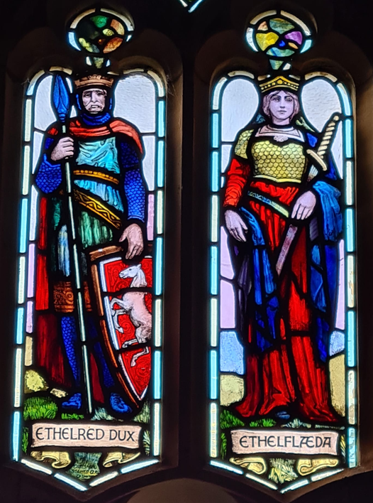

Æthelflæd, Lady of the Mercians may have been written out of history, but today we can find evidence of her life and achievements in many places.
Finding Æthelflæd in WORCESTER
Worcester was a key borough reinforced by King Alfred's daughter, Æthelflæd, and her husband, Æthelred, who are today celebrated in a stained-glass window in Worcester Cathedral. A Charter of 902, signed by Æthelflæd, along with Bishop Wærferth and Æthelred, gave rights to tax revenues to the church in return for prayers in the cathedral to Æthelflæd and Æthelred. This is a rare example of a woman signing Anglo-Saxon charters, and symbolises Æthelflæd's influence even in the early part of her time as the Lady of the Mercians.

Although she is more famous for fortifying towns and leading the fightback against the Vikings, she also supported what has been called a 'knowledge hub' in Worcester throughout her reign. Four contemporary prayer books were written by women, for women, in Worcester, including one containing gynaecological prayer. (see Femina, Jamina Ramirez, 2022)
During Æthelflæd's early years in Mercia, Wærferth, the Bishop of Worcester, became a key advisor and remained a constant supporter and friend.
In King Alfred's Daughter, this is how Æthelflæd describes a visit to the church where she checks to see if the Bishop has been keeping his side of the bargain as documented in the Charter of 902AD:
"When I entered the vestibule of St Peter's with the bishop, we paused to allow those ahead to be seated. Someone whispered and pointed in our direction. As one, the heads of the congregation turned to gawk at me before looking down to pray as though they had seen nothing. Wærferth walked me down the knave, past the rows of farmers, artisans, traders and their families, and into the empty front pew. I sat there in lonely isolation whilst the bishop took his seat in the chancel. The priest who took the mass was young yet word perfect, and the choir of monks sang in such harmony that I almost wept at the beauty of the sound. Finally, at the end of the service, the moment came when I would discover how our charter agreement was being honoured. The priest looked to Bishop Wærferth who rose and came to the pulpit. I had noticed before that the bishop used a booming voice when he spoke in church, yet today he used softer tones, more like the ones he used privately. 'Those of you who regularly attend this church will know that it is our custom to sing the psalm, De Profundis to conclude our service. The younger ones amongst you may not know why we do this. Well, many years ago, the Lord and the Lady of Mercia generously endowed this church and, in return, we agreed to sing this psalm in their honour as long as they shall live. Happily, we welcome the Lady Æthelflæd amongst us today, so I ask you to sing even more heartily than usual for our kind benefactor.' Tears welled in my eyes as the psalm resonated around the rafters and I joined the good folk of Worcester in singing the words: Out of the depths, I have cried unto You, Lord. Lord, hear my voice. I was soon to discover that He had."
— Excerpt from King Alfred's Daughter, chapter 11, The Book Guild